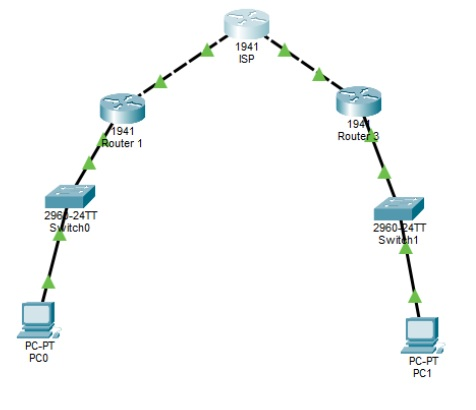

Objetivo: Configuración de un VPN Site-to-Site utilizando el protocolo IPsec para interconectar redes remotas de forma segura a través de Internet (Simulación en Cisco Packet Tracer).
IPsec (Internet Protocol Security) es un conjunto de protocolos que operan en la capa de red (Capa 3 OSI) asegurando las comunicaciones IP mediante autenticación y cifrado de cada paquete.

A continuación se detallan los comandos aplicados en los routers de borde (R1 y R3) para establecer el túnel.
Se crea una lista de acceso extendida para identificar qué tráfico debe ser cifrado y enviado por el túnel.
Negociación de parámetros de seguridad para establecer el canal de gestión (IKE).
Creación del Transform Set que define cómo se protegerán los datos del usuario.
Vinculación de la ACL, el Peer remoto y el Transform Set.
Activación del mapa en la interfaz de salida hacia Internet.
Esta actividad fue un ejemplo de cpomo establecer un VPN sitio a sitio con Ipsec, a mi parecer fue la actividad más dificil de comprender y realizar sin embargo es muy util.